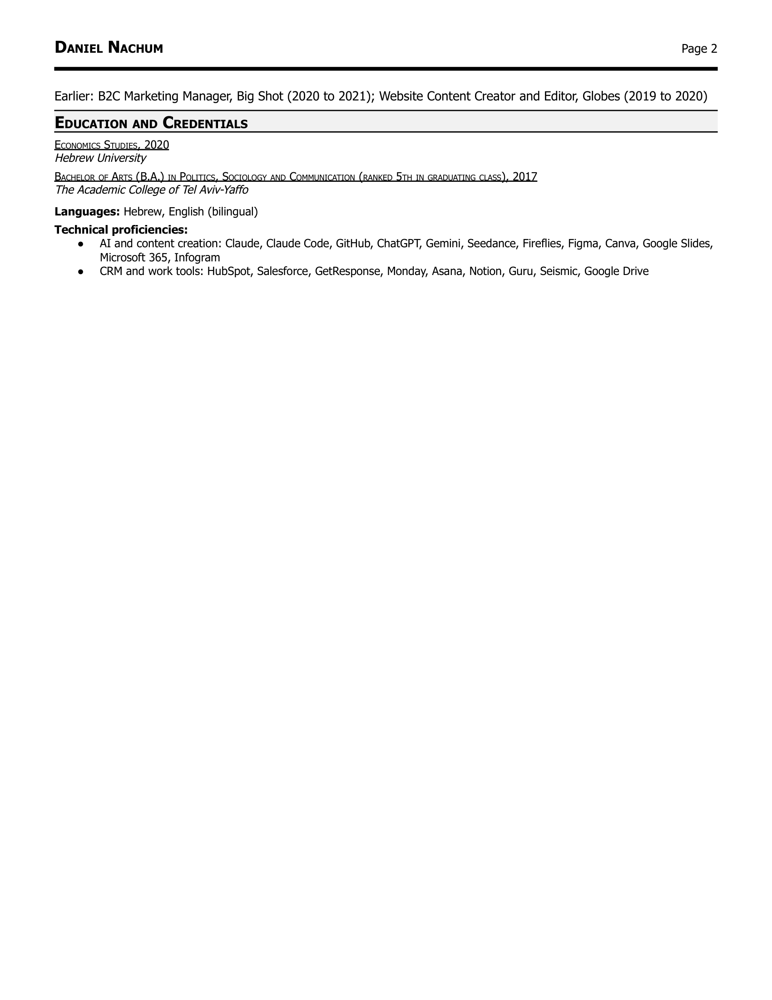

DANIEL NACHUM
Israel
+972-54-733-6304
oberman.daniel@gmail.com
GitHub | LinkedIn
(See recommendations on LinkedIn)
PROFESSIONAL EXPERIENCE
DEMOSTACK, TEL AVIV, MARCH 2026 TO AUGUST 2026
FOUNDING PRODUCT MARKETING MANAGER
● Fully owned the launch of the company's new agentic offering, from discovery and GTM planning through
go-live. This included positioning, product naming, value-driven messaging, competitor and win-loss analysis,
sales collateral, website content and PR.
● Prepared Sales and CS to win enterprise deals through group sessions, a constantly updated content hub and
1:1 coaching on high-stakes calls and RFP responses.
● Proactively engaged with the market (F2F, Zoom, Gong) to extract new use cases and needs that shaped the
roadmap and GTM.
● Contributed directly to pipeline across multiple GTM motions, such as:
○ A vibe-coding hackathon, run with community partners and thought leaders in Demostack's ICP,
that turned 3 participants into enterprise sales opportunities.
○ Organic and paid campaigns based on product marketing content.
● Cut asset production time from weeks to hours by building an AI marketing brain, a single source of truth
that auto-creates sales slides, mockups, one-pagers and testimonials without depending on Design or PM.
PMMIYA COMMUNITY, TEL AVIV, FEBRUARY 2026 TO PRESENT
COMMUNITY LEAD
● Manage Israel's largest product marketing community of 7,000+ members, hosting events and podcasts.
WINDWARD MARITIME AI, TEL AVIV, 2023 TO 2025
PRODUCT MARKETING MANAGER
● Owned product marketing for Windward's newest business line, the main driver of the company's exit in 2025.
● Wrote product marketing content tailored to enterprise sales cycles, aligning assets like landing pages, case
studies, whitepapers and webinars to the right audiences to accelerate pipeline.
● Collaborated with analysts, industry thought leaders and award organizations to position Windward as a
category leader, contributing to its inclusion in the Gartner Magic Quadrant.
● Served as the go-to subject matter expert on both industry and platform-related topics, including training
internal teams and speaking at webinars and conferences.
● Led the GTM strategy and execution, from identifying audiences, use cases and USPs to shaping packaging
and pricing and deploying the marketing plan, with a focus on measurable outcomes and KPIs.
● Ran competitive and market intelligence through customer and prospect interviews and competitor tracking,
turning insights into narrative, pricing, campaign and roadmap decisions.
● Launched 3 technical products, translating complex features into clear, marketable value for the ICP.
● Secured earned media coverage, bringing Windward's proprietary data to global outlets such as NYT, WSJ and
BBC, and working with reporters to frame the angle that would interest them most.
CELLEBRITE (NASDAQ: CLBT), PETAH TIKVA, 2021 TO 2023
SENIOR MANAGER, PRODUCT MARKETING
● Briefed IDC analysts on the digital intelligence story, earning Cellebrite a Leader spot in the 2022 IDC
MarketScape, and leveraging the recognition with leadership and customer-facing teams.
● Partnered with in-house subject matter experts to turn their knowledge into thought leadership content.
● Drove launches end to end with Product and R&D, from naming and messaging to talk track, release assets
and rollout across channels.
● Distilled deep technical forensic capabilities into crisp, buyer-facing messaging for inbound and outbound
motions.
● Executed large-scale training events, including SKO, equipping field and CS teams with sharp, persuasive
stories and the domain expertise needed to win.
● Armed sales reps with the enablement they used to close deals: battlecards, objection handling, discovery
guides, demo scripts, competitive analyses and pitch decks.
DANIEL NACHUM
Page 2
Earlier: B2C Marketing Manager, Big Shot (2020 to 2021); Website Content Creator and Editor, Globes (2019 to 2020)
EDUCATION AND CREDENTIALS
ECONOMICS STUDIES, 2020
Hebrew University
BACHELOR OF ARTS (B.A.) IN POLITICS, SOCIOLOGY AND COMMUNICATION (RANKED 5TH IN GRADUATING CLASS), 2017
The Academic College of Tel Aviv-Yaffo
Languages: Hebrew, English (bilingual)
Technical proficiencies:
● AI and content creation: Claude, Claude Code, GitHub, ChatGPT, Gemini, Seedance, Fireflies, Figma, Canva, Google Slides,
Microsoft 365, Infogram
● CRM and work tools: HubSpot, Salesforce, GetResponse, Monday, Asana, Notion, Guru, Seismic, Google Drive